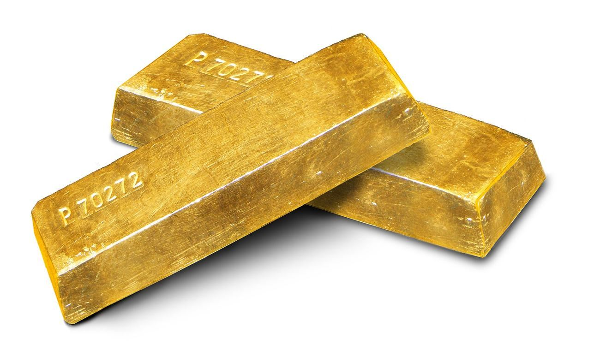

Bullion is the jewelry industry's weather. The metals desk files the morning note on gold, silver, platinum and palladium — then follows the price into the workshop: hallmarking policy, recycling flows, hollow-chain engineering and what $4,000-plus gold does to every counter in the world.

Gold stabbed below $4,000 on war nerves and snapped back within a day. Manufacturers have stopped waiting for a retreat: product architecture is being redesigned around a $4,000-plus planning price.
Hollow forms, electroforming, 9k and 10k revivals, silver-gilt hybrids — the craft of making less metal look like more is the decade's quiet growth industry. Vicenza and Shenzhen lead.
At these prices, the scrap drawer is a mine. Old-gold buybacks are now a strategic sourcing channel for refiners and brands alike — with its own pricing, logistics and fraud problems.
The assay office's stamped guarantee of fineness — 750 for 18k, 916 for 22k. The oldest consumer-protection system in the world, and the inspiration for this paper's own mark.
The labor and design fee added over the metal's melt value — the jeweler's actual margin. When gold spikes, making charges get squeezed first; watch them to see who holds pricing power.
24k is pure; 22k, 18k, 14k, 10k and 9k trade purity for durability and price. Bull markets in bullion push whole countries down a rung — India's 18k boom is this cycle's signature.
What a piece is worth as raw metal, ignoring craft entirely. The gap between melt and retail is where brand, design and trust live — and it's the number every buyback desk starts from.
China's June bullion imports reached roughly 173 tonnes, the strongest monthly inflow since March 2024, lifting first-half imports toward 820 tonnes as softer prices revived demand. The buying helped gold defend the low $4,000s into the Federal Reserve's July 28–29 meeting, which sits alongside second-quarter GDP and core PCE inflation seen near 3.3%.
Silver rose about 2% on Friday July 24 to roughly $58 an ounce while gold held near $4,061, compressing the gold-silver ratio to about 69.5 from 70.7 at midweek. The Federal Reserve meets July 28–29 with a hold widely expected; crude hit six-week highs on Iran and Red Sea risk, and two-year Treasury yields reached a 17-month high. Coin and bar premiums held firm.
Gold held a high plateau below $4,100 into a Federal Reserve meeting (July 28–29) widely expected to leave rates unchanged, echoing the ECB's Thursday hold. Jobless claims of 187,000 undercut the 212,000 forecast. Silver rose 1.2% to $58.22; platinum fell 1.1% to $1,574.
Total platinum demand is seen falling 9% to 7,674koz, with jewelry demand down 12% and automotive off 2%, while industrial rises 9% to 2,238koz and bar-and-coin investment jumps 27% to 718koz. Above-ground stocks would cover under three months of demand by year-end, yet spot sits at $1,574.
Spot gold held near $4,028 on July 24, just above the $4,000 floor, after sliding from a two-week peak above $4,160. Brent crude cleared $100 and the 10-year yield reached 4.70%; Fed-funds futures now imply an 80% chance of a September rate rise, up from 68% a week earlier. Roughly 45% of surveyed central banks plan to add gold.